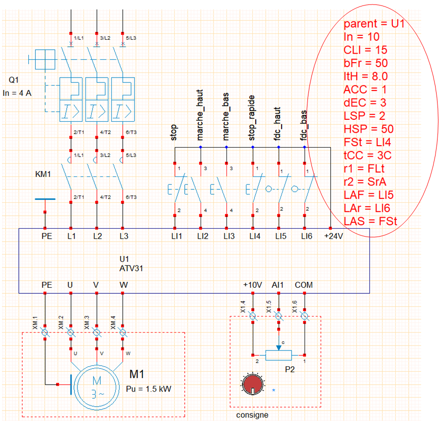

Speed controller
Preamble
WRsimulator can be used to insert variable speed drives into folios. The library currently includes SchneiderElectric ATV31 single-phase and three-phase drive objects. Example 18-demo_variateurATV31 illustrates the use of an ATV31 drive to control the speed of a moving table.  - the drive is attached to a text zone edited in WinRelais, which specifies its parameters, - The first line of the text zone must begin with the command : - parent = drive name, - This text zone can be placed anywhere in the diagram, - If the text field does not exist, the drive is set to default parameters.
ATV31 settings
ATV31_programming_manual_FR_1624588_04.pdf
| Default settings | Description |
|---|---|
| In = 10 | Inverter calibration |
| bFr = 50 | Standard motor frequency [50,60] |
| ItH = 10.0 | Motor thermal protection [0.2 to 1.5 In] |
| CLI = 15.0 | Current limitation [0.25 to 1.5 In] |
| ACC = 3.0 | Acceleration ramp time [0.1 to 3276 s] |
| dEC = 3.0 | Deceleration ramp time [0.1 to 3276 s] |
| LSP = 0 | Low speed [0 Hz to HSP] |
| HSP = 50 | High speed [LSP to bFR] |
| PS2 = n0 | 2 preset speeds [n0,LI3,LI4,LI5,LI6] |
| PS4 = n0 | 4 preselected speeds [n0,LI3,LI4,LI5,LI6] |
| PS8 = n0 | 8 preselected speeds [n0,LI3,LI4,LI5,LI6] |
| SP2 = 10 | Preset speed 2 [0 Hz to HSP] |
| SP3 = 15 | Preset speed 3 [0 Hz to HSP] |
| SP4 = 20 | Preset speed 4 [0 Hz to HSP] |
| SP5 = 25 | Preset speed 5 [0 Hz to HSP] |
| SP6 = 30 | Preset speed 6 [0 Hz to HSP] |
| SP7 = 35 | Preset speed 7 [0 Hz to HSP] |
| SP8 = 40 | Preset speed 8 [0 Hz to HSP] |
| tCC = 2C | Control 2wire / 3wire [2C, 3C] |
| tCt = trn | Control type 2wire [LEL, trn, PFO] |
| r1 = FLt | Relay r1 [n0,FLt,rUn,FtA,FLA,CtA,SrA,tSA,APL,LI1,LI2,LI3,LI4,LI5,LI6] |
| r2 = n0 | Relay r2 [n0,FLt,rUn,FtA,FLA,CtA,SrA,tSA,bLC,APL,LI1,LI2,LI3,LI4,LI5,LI6] |
| FSt = n0 | Fast stop on logic 0 [n0, LI1, LI2, LI3, LI4, LI5, LI6] |
| LAF = n0 | Forward limit switch [n0, LI1, LI2, LI3, LI4, LI5, LI6] |
| LAr = n0 | Stroke end forward [n0, LI1, LI2, LI3, LI4, LI5,LI6] |
| LAS = nSt | Stop type at end of stroke [rMP, FSt, nSt] |
| FR1 = AII | Setpoint 1 configuration [AII, AI2, AI3] |
ATV11 settings
| default settings | Description |
|---|---|
| In = 10 | Inverter calibration |
| bFr = 50 | Standard motor frequency [50,60] |
| ItH = 10.0 | Motor thermal protection [0.2 to 1.5 In] |
| CLI = 15.0 | Current limitation [0.25 to 1.5 In] |
| ACC = 3.0 | Acceleration ramp time [0.1 to 3276 s] |
| dEC = 3.0 | Deceleration ramp time [0.1 to 3276 s] |
| LSP = 0 | Low speed [0 Hz to HSP] |
| HSP = 50 | High speed [LSP to bFR] |
| SP2 = 10 | Preset speed 2 [0 Hz to HSP] |
| SP3 = 25 | Preset speed 3 [0 Hz to HSP] |
| SP4 = 50 | Preset speed 4 [0 Hz to HSP] |
| Alt = 5U | Analog input configuration [5U, 10U, 0A, 4A] |
| ACt = 2C | 2-wire / 3-wire control [2C, 3C] |
| tCt = trn | 2-wire control type [LEL, trn, PFO] |
| rrS = n0 | Rear direction [n0,LII,LI2,LI3,LI4] |
| LIA = n0 | LIA input assignment [n0,LII,LI2,LI3,LI4] |
| LIb = n0 | Input assignment LIb [n0,LII,LI2,LI3,LI4] |
| dO = n0 | [n0, 0Cr, rFr, FtA, SrA CtA] |
| Ftd = 50 | Threshold frequency (0 to 200 Hz) |
| Ctd = 10 | Current threshold [0 to 1.5 In] |